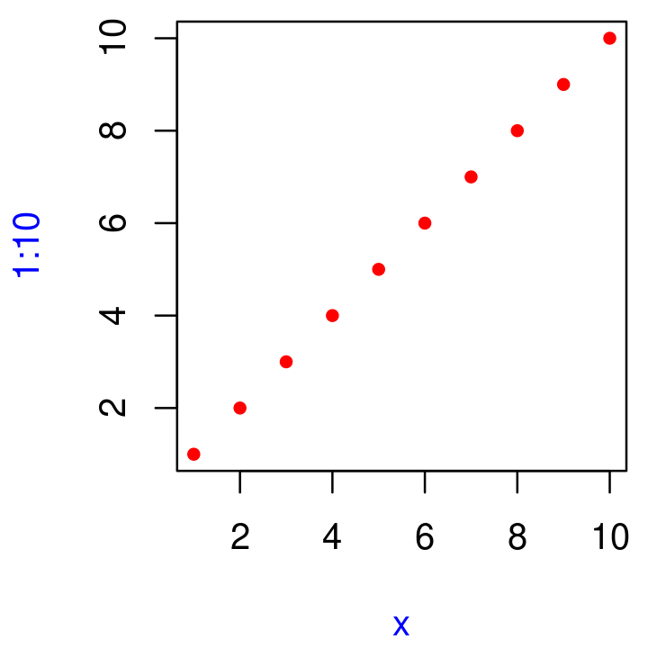

x <- 10
f1 <- function(x) {
function() {
x + 10
}
}
f1(1)()6 Funciones
6.1 Introducción
Si está leyendo este libro, probablemente ya haya creado muchas funciones R y sepa cómo usarlas para reducir la duplicación en su código. En este capítulo, aprenderá cómo convertir ese conocimiento práctico e informal en una comprensión teórica más rigurosa. Y aunque verá algunos trucos y técnicas interesantes a lo largo del camino, tenga en cuenta que lo que aprenderá aquí será importante para comprender los temas más avanzados que se tratan más adelante en el libro.
Prueba
Responda las siguientes preguntas para ver si puede omitir este capítulo con seguridad. Puede encontrar las respuestas en la Sección 6.9.
¿Cuáles son los tres componentes de una función?
¿Qué devuelve el siguiente código?
¿Cómo escribirías normalmente este código?
`+`(1, `*`(2, 3))¿Cómo podría hacer que esta llamada sea más fácil de leer?
mean(, TRUE, x = c(1:10, NA))¿El siguiente código arroja un error cuando se ejecuta? ¿Por qué o por qué no?
f2 <- function(a, b) { a * 10 } f2(10, stop("This is an error!"))¿Qué es una función infija? ¿Cómo lo escribes? ¿Qué es una función de reemplazo? ¿Cómo lo escribes?
¿Cómo se asegura de que se produzca una acción de limpieza independientemente de cómo finalice una función?
Estructura
La Sección 6.2 describe los aspectos básicos de la creación de una función, los tres componentes principales de una función y la excepción a muchas reglas de funciones: funciones primitivas (que se implementan en C, no en R).
La Sección 6.3 analiza las fortalezas y debilidades de las tres formas de composición de funciones comúnmente utilizadas en el código R.
La Sección 6.4 le muestra cómo R encuentra el valor asociado con un nombre dado, es decir, las reglas del alcance léxico.
La Sección 6.5 está dedicada a una propiedad importante de los argumentos de función: solo se evalúan cuando se usan por primera vez.
La Sección 6.6 analiza el argumento especial
..., que le permite pasar argumentos adicionales a otra función.La Sección 6.7 analiza las dos formas principales en que una función puede salir y cómo definir un controlador de salida, código que se ejecuta al salir, independientemente de lo que lo active.
La Sección 6.8 le muestra las diversas formas en que R disfraza las llamadas a funciones ordinarias y cómo puede usar la forma de prefijo estándar para comprender mejor lo que está sucediendo.
6.2 Fundamentos de funciones
Para entender las funciones en R necesitas internalizar dos ideas importantes:
- Las funciones se pueden dividir en tres componentes: argumentos, cuerpo y entorno.
Hay excepciones a cada regla y, en este caso, hay una pequeña selección de funciones base “primitivas” que se implementan únicamente en C.
- Las funciones son objetos, al igual que los vectores son objetos.
6.2.1 Componentes de una función
Una función tiene tres partes.:
Los formularios,
formals(), la lista de argumentos que controlan cómo llamas a la función.El cuerpo,
body(), el código dentro de la función.El entorno,
environment(), la estructura de datos que determina cómo la función encuentra los valores asociados con los nombres.
Mientras que los formularios y el cuerpo se especifican explícitamente cuando crea una función, el entorno se especifica implícitamente, en función de dónde definió la función. El entorno de la función siempre existe, pero solo se imprime cuando la función no está definida en el entorno global.
f02 <- function(x, y) {
# A comment
x + y
}
formals(f02)
#> $x
#>
#>
#> $y
body(f02)
#> {
#> x + y
#> }
environment(f02)
#> <environment: R_GlobalEnv>Dibujaré funciones como en el siguiente diagrama. El punto negro de la izquierda es el entorno. Los dos bloques a la derecha son los argumentos de la función. No dibujaré el cuerpo, porque generalmente es grande y no te ayuda a entender la forma de la función.

Como todos los objetos en R, las funciones también pueden poseer cualquier cantidad de atributos, attributes(), adicionales. Un atributo utilizado por la base R es srcref, abreviatura de fuente de referencia. Apunta al código fuente utilizado para crear la función. El srcref se usa para imprimir porque, a diferencia de body(), contiene comentarios de código y otros formatos.
attr(f02, "srcref")
#> function(x, y) {
#> # A comment
#> x + y
#> }6.2.2 Funciones primitivas
Hay una excepción a la regla de que una función tiene tres componentes. Las funciones primitivas, como sum() y [, llaman directamente al código C.
sum
#> function (..., na.rm = FALSE) .Primitive("sum")
`[`
#> .Primitive("[")Ellas tienen el tipo builtin o tipospecial.
typeof(sum)
#> [1] "builtin"
typeof(`[`)
#> [1] "special"Estas funciones existen principalmente en C, no en R, por lo que sus formals(), body() y environment() son todos NULL:
formals(sum)
#> NULL
body(sum)
#> NULL
environment(sum)
#> NULLLas funciones primitivas solo se encuentran en el paquete base. Si bien tienen ciertas ventajas de rendimiento, este beneficio tiene un precio: son más difíciles de escribir. Por esta razón, R-core generalmente evita crearlos a menos que no haya otra opción.
6.2.3 Funciones de primera clase
Es muy importante comprender que las funciones de R son objetos por derecho propio, una propiedad del lenguaje a menudo denominada “funciones de primera clase”. A diferencia de muchos otros lenguajes, no existe una sintaxis especial para definir y nombrar una función: simplemente crea un objeto de función (con funtion) y lo vincula a un nombre con <-:
f01 <- function(x) {
sin(1 / x ^ 2)
}
Si bien casi siempre crea una función y luego la vincula a un nombre, el paso de vinculación no es obligatorio. Si elige no dar un nombre a una función, obtendrá una función anónima. Esto es útil cuando no vale la pena el esfuerzo de averiguar un nombre:
lapply(mtcars, function(x) length(unique(x)))
Filter(function(x) !is.numeric(x), mtcars)
integrate(function(x) sin(x) ^ 2, 0, pi)Una última opción es poner funciones en una lista:
funs <- list(
half = function(x) x / 2,
double = function(x) x * 2
)
funs$double(10)
#> [1] 20En R, a menudo verá funciones llamadas cierres closures. Este nombre refleja el hecho de que las funciones de R capturan o encierran sus entornos, sobre los que aprenderá más en la Sección 7.4.2.
6.2.4 Invocando una función
Normalmente llamas a una función colocando sus argumentos, entre paréntesis, después de su nombre: mean(1:10, na.rm = TRUE). Pero, ¿qué sucede si ya tiene los argumentos en una estructura de datos?
args <- list(1:10, na.rm = TRUE)En su lugar, puede usar do.call(): tiene dos argumentos. La función a llamar y una lista que contiene los argumentos de la función:
do.call(mean, args)
#> [1] 5.5Volveremos a esta idea en la Sección 19.6.
6.2.5 Ejercicios
Dado un nombre, como
"mean",match.fun()te permite encontrar una función. Dada una función, ¿puedes encontrar su nombre? ¿Por qué eso no tiene sentido en R?Es posible (aunque normalmente no es útil) llamar a una función anónima. ¿Cuál de los dos enfoques siguientes es el correcto? ¿Por qué?
function(x) 3() #> function(x) 3() (function(x) 3)() #> [1] 3Una buena regla general es que una función anónima debería caber en una línea y no debería necesitar usar
{}. Revisa tu código. ¿Dónde podría haber usado una función anónima en lugar de una función con nombre? ¿Dónde debería haber usado una función con nombre en lugar de una función anónima?¿Qué función te permite saber si un objeto es una función? ¿Qué función te permite saber si una función es una función primitiva?
Este código hace una lista de todas las funciones en el paquete base.
objs <- mget(ls("package:base", all = TRUE), inherits = TRUE) funs <- Filter(is.function, objs)Úsalo para responder las siguientes preguntas:
¿Qué función base tiene más argumentos?
¿Cuántas funciones base no tienen argumentos? ¿Qué tienen de especial esas funciones?
¿Cómo podrías adaptar el código para encontrar todas las funciones primitivas?
¿Cuáles son los tres componentes importantes de una función?
¿Cuándo la impresión de una función no muestra el entorno en el que se creó?
6.3 Composición de funciones
Base R proporciona dos formas de componer múltiples llamadas a funciones. Por ejemplo, imagina que quieres calcular la desviación estándar de la población usando sqrt() y mean() como bloques de construcción:
square <- function(x) x^2
deviation <- function(x) x - mean(x)O anida las llamadas de función:
x <- runif(100)
sqrt(mean(square(deviation(x))))
#> [1] 0.274O guarda los resultados intermedios como variables:
out <- deviation(x)
out <- square(out)
out <- mean(out)
out <- sqrt(out)
out
#> [1] 0.274Tanto el paquete magrittr (Bache y Wickham 2014) y R base (a partir de la versión 4.1.0) proporcionan una tercera opción: el operador binario ‘%>%’ y ‘|>’ respectivamente, que se llama canalización y se pronuncia como “y luego”.
library(magrittr)
x %>%
deviation() %>%
square() %>%
mean() %>%
sqrt()
#> [1] 0.274O
x |>
deviation() |>
square() |>
mean() |>
sqrt()
#> [1] 0.274x |> f() es equivalente a f(x); x |> f(y) es equivalente a f(x, y). La canalización le permite concentrarse en la composición de funciones de alto nivel en lugar del flujo de datos de bajo nivel; el foco está en lo que se está haciendo (los verbos), más que en lo que se está modificando (los sustantivos). Este estilo es común en Haskell y F#, la principal inspiración para magrittr, y es el estilo predeterminado en lenguajes de programación basados en pilas como Forth y Factor. Para conocer más sobre las canalizaciones o pipe le recomiendo consultar la Sección 5.3 de R para la Ciencia de Datos
Cada una de las tres opciones tiene sus propias fortalezas y debilidades:
El anidamiento,
f(g(x)), es conciso y muy adecuado para secuencias cortas. Pero las secuencias más largas son difíciles de leer porque se leen al revés y de derecha a izquierda. Como resultado, los argumentos pueden extenderse a largas distancias creando el problema Dagwood sandwich.Objetos intermedios,
y <- f(x); g(y), requiere que nombres objetos intermedios. Esta es una fortaleza cuando los objetos son importantes, pero una debilidad cuando los valores son realmente intermedios.La canalización,
x |> f() |> g(), le permite leer el código de manera directa de izquierda a derecha y no requiere que nombre objetos intermedios. Pero solo puede usarlo con secuencias lineales de transformaciones de un solo objeto. Asume que el lector entiende las canalizaciones.
La mayoría del código utilizará una combinación de los tres estilos. Las canalizaciones son más comunes en el código de análisis de datos, ya que gran parte de un análisis consiste en una secuencia de transformaciones de un objeto (como un marco de datos o un gráfico). Tiendo a usar canalizaciones con poca frecuencia en los paquetes; no porque sea una mala idea, sino porque a menudo es un ajuste menos natural.
6.4 Scooping léxico
En el Capítulo 2, discutimos la asignación, el acto de vincular un nombre a un valor. Aquí hablaremos de scoping, el acto de encontrar el valor asociado con un nombre.
Las reglas básicas del scoping son bastante intuitivas y probablemente ya las haya internalizado, incluso si nunca las estudió explícitamente. Por ejemplo, ¿qué devolverá el siguiente código, 10 o 20?1
x <- 10
g01 <- function() {
x <- 20
x
}
g01()En esta sección, aprenderá las reglas formales del alcance, así como algunos de sus detalles más sutiles. Una comprensión más profunda del alcance lo ayudará a usar herramientas de programación funcional más avanzadas y, eventualmente, incluso a escribir herramientas que traduzcan el código R a otros lenguajes.
R usa scooping léxico2: busca los valores de los nombres según cómo se define una función, no cómo se llama. “Léxico” o lexical, en inglés, es un término técnico de CS (Computer Science) que nos dice que las reglas de scooping utilizan un tiempo de análisis, en lugar de una estructura de tiempo de ejecución.
El scoopin léxico de R sigue 4 reglas principales:
- Enmascaramiento de nombres
- Funciones versus variables
- Un nuevo comienzo
- Búsqueda dinámica
6.4.1 Enmascaramiento de nombres
El principio básico del alcance léxico es que los nombres definidos dentro de una función enmascaran los nombres definidos fuera de una función. Esto se ilustra en el siguiente ejemplo.
x <- 10
y <- 20
g02 <- function() {
x <- 1
y <- 2
c(x, y)
}
g02()
#> [1] 1 2Si un nombre no está definido dentro de una función, R busca un nivel superior.
x <- 2
g03 <- function() {
y <- 1
c(x, y)
}
g03()
#> [1] 2 1
# And this doesn't change the previous value of y
y
#> [1] 20Las mismas reglas se aplican si una función se define dentro de otra función. Primero, R mira dentro de la función actual. Luego, busca dónde se definió esa función (y así sucesivamente, hasta llegar al entorno global). Finalmente, busca en otros paquetes cargados.
Ejecute el siguiente código en su cabeza, luego confirme el resultado ejecutando el código.3
x <- 1
g04 <- function() {
y <- 2
i <- function() {
z <- 3
c(x, y, z)
}
i()
}
g04()Las mismas reglas también se aplican a las funciones creadas por otras funciones, a las que llamo fabricas de funciones, el tema del Capítulo 10.
6.4.2 Funciones versus variables
En R, las funciones son objetos ordinarios. Esto significa que las reglas de alcance descritas anteriormente también se aplican a las funciones:
g07 <- function(x) x + 1
g08 <- function() {
g07 <- function(x) x + 100
g07(10)
}
g08()
#> [1] 110Sin embargo, cuando una función y una no función comparten el mismo nombre (por supuesto, deben residir en diferentes entornos), la aplicación de estas reglas se vuelve un poco más complicada. Cuando usa un nombre en una llamada de función, R ignora los objetos que no son funciones cuando busca ese valor. Por ejemplo, en el siguiente código, g09 toma dos valores diferentes:
g09 <- function(x) x + 100
g10 <- function() {
g09 <- 10
g09(g09)
}
g10()
#> [1] 110Para que conste, usar el mismo nombre para diferentes cosas es confuso y ¡es mejor evitarlo!
6.4.3 Un nuevo comienzo
¿Qué sucede con los valores entre invocaciones de una función? Considere el siguiente ejemplo. ¿Qué sucederá la primera vez que ejecute esta función? ¿Qué pasará la segunda vez?4 (Si no ha visto exists() antes, devuelve TRUE si hay una variable con ese nombre y devuelve FALSE si no.)
g11 <- function() {
if (!exists("a")) {
a <- 1
} else {
a <- a + 1
}
a
}
g11()
g11()Puede que te sorprenda que g11() siempre devuelve el mismo valor. Esto sucede porque cada vez que se llama a una función, se crea un nuevo entorno para albergar su ejecución. Esto significa que una función no tiene forma de saber qué sucedió la última vez que se ejecutó; cada invocación es completamente independiente. Veremos algunas formas de evitar esto en la Sección 10.2.4.
6.4.4 Búsqueda dinámica
El scooping léxico determina dónde, pero no cuándo buscar valores. R busca valores cuando se ejecuta la función, no cuando se crea la función. Juntas, estas dos propiedades nos dicen que la salida de una función puede diferir dependiendo de los objetos fuera del entorno de la función:
g12 <- function() x + 1
x <- 15
g12()
#> [1] 16
x <- 20
g12()
#> [1] 21Este comportamiento puede ser bastante molesto. Si comete un error ortográfico en su código, no recibirá un mensaje de error cuando cree la función. Y dependiendo de las variables definidas en el entorno global, es posible que ni siquiera reciba un mensaje de error cuando ejecute la función.
Para detectar este problema, utilice codetools::findGlobals(). Esta función enumera todas las dependencias externas (símbolos independientes) dentro de una función:
codetools::findGlobals(g12)
#> [1] "+" "x"Para resolver este problema, puede cambiar manualmente el entorno de la función a emptyenv(), un entorno que no contiene nada:
environment(g12) <- emptyenv()
g12()
#> Error in x + 1: could not find function "+"El problema y su solución revelan por qué existe este comportamiento aparentemente indeseable: R se basa en el scooping léxico para encontrar todo, desde lo obvio, como mean(), hasta lo menos obvio, como + o incluso {. Esto le da a las reglas de scooping de R una hermosa simplicidad.
6.4.5 Ejercicios
¿Qué devuelve el siguiente código? ¿Por qué? Describa cómo se interpreta cada una de las tres
c.c <- 10 c(c = c)¿Cuáles son los cuatro principios que rigen cómo R busca valores?
¿Qué devuelve la siguiente función? Haga una predicción antes de ejecutar el código usted mismo.
f <- function(x) { f <- function(x) { f <- function() { x ^ 2 } f() + 1 } f(x) * 2 } f(10)
6.5 Evaluación perezosa
En R, los argumentos de función se evalúan perezosamente: solo se evalúan si se accede a ellos. Por ejemplo, este código no genera un error porque x nunca se usa:
h01 <- function(x) {
10
}
h01(stop("This is an error!"))
#> [1] 10Esta es una característica importante porque le permite hacer cosas como incluir cálculos potencialmente costosos en los argumentos de la función que solo se evaluarán si es necesario.
6.5.1 Promesas
La evaluación perezosa está impulsada por una estructura de datos llamada promesa o (menos comúnmente) un thunk. Es una de las características que hace de R un lenguaje de programación tan interesante (volveremos a las promesas en la Sección 20.3).
Una promesa tiene tres componentes:
Una expresión, como
x + y, que da lugar al cálculo retrasado.Un entorno donde se debe evaluar la expresión, es decir, el entorno donde se llama a la función. Esto asegura que la siguiente función devuelva 11, no 101:
y <- 10 h02 <- function(x) { y <- 100 x + 1 } h02(y) #> [1] 11Esto también significa que cuando realiza una asignación dentro de una llamada a una función, la variable se vincula fuera de la función, no dentro de ella.
h02(y <- 1000) #> [1] 1001 y #> [1] 1000Un valor, que se calcula y almacena en caché la primera vez que se accede a una promesa cuando la expresión se evalúa en el entorno especificado. Esto asegura que la promesa se evalúe como máximo una vez, y es por eso que solo ve “Calculando…” impreso una vez en el siguiente ejemplo.
double <- function(x) { message("Calculating...") x * 2 } h03 <- function(x) { c(x, x) } h03(double(20)) #> Calculating... #> [1] 40 40
No puede manipular promesas con código R. Las promesas son como un estado cuántico: cualquier intento de inspeccionarlas con código R forzará una evaluación inmediata, haciendo que la promesa desaparezca. Más adelante, en la Sección 20.3, aprenderá sobre las quosures, que convierten las promesas en un objeto R donde puede inspeccionar fácilmente la expresión y el entorno.
6.5.2 Argumentos por defecto
Gracias a la evaluación perezosa, los valores predeterminados se pueden definir en términos de otros argumentos, o incluso en términos de variables definidas más adelante en la función:
h04 <- function(x = 1, y = x * 2, z = a + b) {
a <- 10
b <- 100
c(x, y, z)
}
h04()
#> [1] 1 2 110Muchas funciones base de R usan esta técnica, pero no la recomiendo. Hace que el código sea más difícil de entender: para predecir qué se devolverá, necesita saber el orden exacto en el que se evalúan los argumentos predeterminados.
El entorno de evaluación es ligeramente diferente para los argumentos predeterminados y proporcionados por el usuario, ya que los argumentos predeterminados se evalúan dentro de la función. Esto significa que llamadas aparentemente idénticas pueden producir resultados diferentes. Es más fácil ver esto con un ejemplo extremo:
h05 <- function(x = ls()) {
a <- 1
x
}
# ls() evaluated inside h05:
h05()
#> [1] "a" "x"
# ls() evaluated in global environment:
h05(ls())
#> [1] "h05"6.5.3 Argumentos faltantes
Para determinar si el valor de un argumento proviene del usuario o de un valor predeterminado, puede usar missing():
h06 <- function(x = 10) {
list(missing(x), x)
}
str(h06())
#> List of 2
#> $ : logi TRUE
#> $ : num 10
str(h06(10))
#> List of 2
#> $ : logi FALSE
#> $ : num 10missing() sin embargo, es mejor usarlo con moderación. Tome sample(), como ejemplo. ¿Cuántos argumentos se requieren?
args(sample)
#> function (x, size, replace = FALSE, prob = NULL)
#> NULLParece que tanto x como size son necesarios, pero si no se proporciona size, sample() usa missing() para proporcionar un valor predeterminado. Si tuviera que volver a escribir la muestra, usaría un NULL explícito para indicar que no se requiere size pero se puede proporcionar:
sample <- function(x, size = NULL, replace = FALSE, prob = NULL) {
if (is.null(size)) {
size <- length(x)
}
x[sample.int(length(x), size, replace = replace, prob = prob)]
}Con el patrón binario creado por la función infija %||%, que usa el lado izquierdo si no es NULL y el lado derecho en caso contrario, podemos simplificar aún más sample():
`%||%` <- function(lhs, rhs) {
if (!is.null(lhs)) {
lhs
} else {
rhs
}
}
sample <- function(x, size = NULL, replace = FALSE, prob = NULL) {
size <- size %||% length(x)
x[sample.int(length(x), size, replace = replace, prob = prob)]
}Debido a la evaluación perezosa, no necesita preocuparse por cálculos innecesarios: el lado derecho de %||% solo se evaluará si el lado izquierdo es NULL.
6.5.4 Ejercicios
¿Qué propiedad importante de
&&hace quex_ok()funcione?x_ok <- function(x) { !is.null(x) && length(x) == 1 && x > 0 } x_ok(NULL) #> [1] FALSE x_ok(1) #> [1] TRUE x_ok(1:3) #> [1] FALSE¿Qué es diferente con este código? ¿Por qué este comportamiento es indeseable aquí?
x_ok <- function(x) { !is.null(x) & length(x) == 1 & x > 0 } x_ok(NULL) #> logical(0) x_ok(1) #> [1] TRUE x_ok(1:3) #> [1] FALSE FALSE FALSE¿Qué devuelve esta función? ¿Por qué? ¿Qué principio ilustra?
f2 <- function(x = z) { z <- 100 x } f2()¿Qué devuelve esta función? ¿Por qué? ¿Qué principio ilustra?
y <- 10 f1 <- function(x = {y <- 1; 2}, y = 0) { c(x, y) } f1() yEn
hist(), el valor predeterminado dexlimesrange(breaks), el valor predeterminado debreakses"Sturges", yrange("Sturges") #> [1] "Sturges" "Sturges"Explique cómo funciona
hist()para obtener un valorxlimcorrecto.Explique por qué funciona esta función. ¿Por qué es confuso?
show_time <- function(x = stop("Error!")) { stop <- function(...) Sys.time() print(x) } show_time() #> [1] "2024-06-07 16:43:01 UTC"¿Cuántos argumentos se requieren al llamar a
library()?
6.6 ... (punto-punto-punto)
Las funciones pueden tener un argumento especial ... (pronunciado punto-punto-punto). Con él, una función puede tomar cualquier número de argumentos adicionales. En otros lenguajes de programación, este tipo de argumento a menudo se llama varargs (abreviatura de argumentos variables), y una función que lo usa se dice que es variable.
También puede usar ... para pasar esos argumentos adicionales a otra función.
i01 <- function(y, z) {
list(y = y, z = z)
}
i02 <- function(x, ...) {
i01(...)
}
str(i02(x = 1, y = 2, z = 3))
#> List of 2
#> $ y: num 2
#> $ z: num 3Usando una forma especial, ..N, es posible (pero rara vez útil) referirse a elementos de ... por posición:
i03 <- function(...) {
list(first = ..1, third = ..3)
}
str(i03(1, 2, 3))
#> List of 2
#> $ first: num 1
#> $ third: num 3Más útil es list(...), que evalúa los argumentos y los almacena en una lista:
i04 <- function(...) {
list(...)
}
str(i04(a = 1, b = 2))
#> List of 2
#> $ a: num 1
#> $ b: num 2(Consulte también rlang::list2() para admitir el empalme e ignorar silenciosamente las comas finales, y rlang::enquos() para capturar argumentos no evaluados, el tema de [cuasicotización].)
Hay dos usos principales de ..., a los cuales volveremos más adelante en el libro:
Si su función toma una función como argumento, querrá alguna forma de pasar argumentos adicionales a esa función. En este ejemplo,
lapply()usa...para pasarna.rmamean():x <- list(c(1, 3, NA), c(4, NA, 6)) str(lapply(x, mean, na.rm = TRUE)) #> List of 2 #> $ : num 2 #> $ : num 5Volveremos a esta técnica en la Sección 9.2.3.
Si su función es genérica de S3, necesita alguna forma de permitir que los métodos tomen argumentos adicionales arbitrarios. Por ejemplo, tome la función
print(). Debido a que existen diferentes opciones para imprimir según el tipo de objeto, no hay forma de especificar previamente todos los argumentos posibles y...permite que los métodos individuales tengan diferentes argumentos:print(factor(letters), max.levels = 4) print(y ~ x, showEnv = TRUE)Volveremos a este uso de
...en la Sección 13.4.3.
Usar ... tiene dos desventajas:
Cuando lo usa para pasar argumentos a otra función, debe explicar cuidadosamente al usuario dónde van esos argumentos. Esto hace que sea difícil entender lo que puedes hacer con funciones como
lapply()yplot().Un argumento mal escrito no generará un error. Esto facilita que los errores tipográficos pasen desapercibidos:
sum(1, 2, NA, na_rm = TRUE) #> [1] NA
6.6.1 Ejercicios
Explique los siguientes resultados:
sum(1, 2, 3) #> [1] 6 mean(1, 2, 3) #> [1] 1 sum(1, 2, 3, na.omit = TRUE) #> [1] 7 mean(1, 2, 3, na.omit = TRUE) #> [1] 1Explique cómo encontrar la documentación para los argumentos con nombre en la siguiente llamada de función:
plot(1:10, col = "red", pch = 20, xlab = "x", col.lab = "blue")
¿Por qué
plot(1:10, col = "red")solo colorea los puntos, no los ejes ni las etiquetas? Lea el código fuente deplot.default()para averiguarlo.
6.7 Salir de una función
La mayoría de las funciones salen de una de dos maneras5: o devuelven un valor, lo que indica el éxito, o arrojan un error, lo que indica el fracaso. Esta sección describe los valores devueltos (implícitos frente a explícitos; visibles frente a invisibles), analiza brevemente los errores y presenta los controladores de salida, que le permiten ejecutar código cuando una función sale.
6.7.1 Rendimientos implícitos versus explícitos
Hay dos formas en que una función puede devolver un valor:
Implícitamente, donde la última expresión evaluada es el valor de retorno:
j01 <- function(x) { if (x < 10) { 0 } else { 10 } } j01(5) #> [1] 0 j01(15) #> [1] 10Explícitamente, llamando
return():j02 <- function(x) { if (x < 10) { return(0) } else { return(10) } }
6.7.2 Valores invisibles
La mayoría de las funciones regresan visiblemente: llamar a la función en un contexto interactivo imprime el resultado.
j03 <- function() 1
j03()
#> [1] 1Sin embargo, puede evitar la impresión automática aplicando invisible() al último valor:
j04 <- function() invisible(1)
j04()Para verificar que este valor existe, puede imprimirlo explícitamente o envolverlo entre paréntesis:
print(j04())
#> [1] 1
(j04())
#> [1] 1Alternativamente, puedes usar withVisible() para devolver el valor y un indicador de visibilidad:
str(withVisible(j04()))
#> List of 2
#> $ value : num 1
#> $ visible: logi FALSELa función más común que regresa invisiblemente es <-:
a <- 2
(a <- 2)
#> [1] 2Esto es lo que hace posible encadenar asignaciones:
a <- b <- c <- d <- 2En general, cualquier función llamada principalmente por un efecto secundario (como <-, print() o plot()) debería devolver un valor invisible (normalmente el valor del primer argumento).
6.7.3 Errores
Si una función no puede completar su tarea asignada, debería arrojar un error con stop(), que finaliza inmediatamente la ejecución de la función.
j05 <- function() {
stop("I'm an error")
return(10)
}
j05()
#> Error in j05(): I'm an errorUn error indica que algo salió mal y obliga al usuario a solucionar el problema. Algunos lenguajes (como C, Go y Rust) se basan en valores de retorno especiales para indicar problemas, pero en R siempre debe arrojar un error. Aprenderá más sobre los errores y cómo manejarlos en el Capítulo 8.
6.7.4 Controladores de salida
A veces, una función necesita realizar cambios temporales en el estado global. Pero tener que limpiar esos cambios puede ser doloroso (¿qué sucede si hay un error?). Para asegurarse de que estos cambios se deshagan y que el estado global se restablezca sin importar cómo salga una función, use on.exit() para configurar un controlador de salida. El siguiente ejemplo simple muestra que el controlador de salida se ejecuta independientemente de si la función sale normalmente o con un error.
j06 <- function(x) {
cat("Hello\n")
on.exit(cat("Goodbye!\n"), add = TRUE)
if (x) {
return(10)
} else {
stop("Error")
}
}
j06(TRUE)
#> Hello
#> Goodbye!
#> [1] 10
j06(FALSE)
#> Hello
#> Error in j06(FALSE): Error
#> Goodbye!on.exit() es útil porque le permite colocar el código de limpieza directamente al lado del código que requiere limpieza:
cleanup <- function(dir, code) {
old_dir <- setwd(dir)
on.exit(setwd(old_dir), add = TRUE)
old_opt <- options(stringsAsFactors = FALSE)
on.exit(options(old_opt), add = TRUE)
}Junto con la evaluación perezosa, esto crea un patrón muy útil para ejecutar un bloque de código en un entorno alterado:
with_dir <- function(dir, code) {
old <- setwd(dir)
on.exit(setwd(old), add = TRUE)
force(code)
}
getwd()
#> [1] "/home/runner/work/adv-res/adv-res"
with_dir("~", getwd())
#> [1] "/home/runner"El uso de force() no es estrictamente necesario aquí ya que simplemente referirse al código forzará su evaluación. Sin embargo, usar force() deja muy claro que estamos forzando deliberadamente la ejecución. Aprenderá otros usos de force() en el Capítulo 10.
El paquete withr (Hester et al. 2018) proporciona una colección de otras funciones para configurar un estado temporal.
En R 3.4 y versiones anteriores, las expresiones on.exit() siempre se ejecutan en orden de creación:
j08 <- function() {
on.exit(message("a"), add = TRUE)
on.exit(message("b"), add = TRUE)
}
j08()
#> a
#> bEsto puede dificultar un poco la limpieza si es necesario realizar algunas acciones en un orden específico; por lo general, desea que se ejecute primero la expresión añadida más reciente. En R 3.5 y versiones posteriores, puede controlar esto configurando after = FALSE:
j09 <- function() {
on.exit(message("a"), add = TRUE, after = FALSE)
on.exit(message("b"), add = TRUE, after = FALSE)
}
j09()
#> b
#> a6.7.5 Ejercicios
¿Qué devuelve
load()? ¿Por qué normalmente no ves estos valores?¿Qué devuelve
write.table()? ¿Qué sería más útil?¿Cómo se compara el parámetro
chdirdesource()conwith_dir()? ¿Por qué preferirías uno a otro?Escriba una función que abra un dispositivo de gráficos, ejecute el código proporcionado y cierre el dispositivo de gráficos (siempre, independientemente de si el código de trazado funciona o no).
Podemos usar
on.exit()para implementar una versión simple decapture.output().capture.output2 <- function(code) { temp <- tempfile() on.exit(file.remove(temp), add = TRUE, after = TRUE) sink(temp) on.exit(sink(), add = TRUE, after = TRUE) force(code) readLines(temp) } capture.output2(cat("a", "b", "c", sep = "\n")) #> [1] "a" "b" "c"Compara
capture.output()concapture.output2(). ¿Cómo difieren las funciones? ¿Qué características he eliminado para que las ideas clave sean más fáciles de ver? ¿Cómo he reescrito las ideas clave para que sean más fáciles de entender?
6.8 Formas de función
Para comprender los cálculos en R, dos lemas son útiles:
- Todo lo que existe es un objeto.
- Todo lo que sucede es una llamada de función.
— John Chambers
Si bien todo lo que sucede en R es el resultado de una llamada de función, no todas las llamadas tienen el mismo aspecto. Las llamadas a funciones vienen en cuatro variedades:
prefija: el nombre de la función viene antes de sus argumentos, como
foofy(a, b, c). Estos constituyen la mayoría de las llamadas a funciones en R.infija: el nombre de la función viene entre sus argumentos, como
x + y. Las formas infijas se utilizan para muchos operadores matemáticos y para funciones definidas por el usuario que comienzan y terminan con%.reemplazo: funciones que reemplazan valores por asignación, como
names(df) <- c("a", "b", "c"). En realidad, parecen funciones de prefijo.especial: funciones como
[[,ifyfor. Si bien no tienen una estructura consistente, juegan papeles importantes en la sintaxis de R.
Si bien hay cuatro formas, en realidad solo necesita una porque cualquier llamada se puede escribir en forma de prefijo. Demostraré esta propiedad y luego aprenderá sobre cada una de las formas.
6.8.1 Reescritura en forma de prefijo
Una propiedad interesante de R es que cada infijo, reemplazo o forma especial se puede reescribir en forma de prefijo. Hacerlo es útil porque lo ayuda a comprender mejor la estructura del lenguaje, le brinda el nombre real de cada función y le permite modificar esas funciones para divertirse y obtener ganancias.
El siguiente ejemplo muestra tres pares de llamadas equivalentes, reescribiendo una forma de infijo, una forma de reemplazo y una forma especial en forma de prefijo.
x + y
`+`(x, y)
names(df) <- c("x", "y", "z")
`names<-`(df, c("x", "y", "z"))
for(i in 1:10) print(i)
`for`(i, 1:10, print(i))¡Sorprendentemente, en R, for se puede llamar como una función normal! Lo mismo es cierto básicamente para todas las operaciones en R, lo que significa que conocer el nombre de la función de una función sin prefijo le permite anular su comportamiento. Por ejemplo, si alguna vez te sientes particularmente mal, ejecuta el siguiente código mientras un amigo no está en su computadora. Introducirá un error divertido: el 10% de las veces, agregará 1 a cualquier cálculo numérico dentro de los paréntesis.
`(` <- function(e1) {
if (is.numeric(e1) && runif(1) < 0.1) {
e1 + 1
} else {
e1
}
}
replicate(50, (1 + 2))
#> [1] 3 3 3 3 3 3 3 3 3 3 3 3 4 3 3 3 3 3 3 3 3 3 3 3 3 3 3 3 3 3 3 3 3 3 3 3 3 3
#> [39] 4 3 4 3 3 3 3 4 3 3 3 3
rm("(")Por supuesto, anular funciones integradas como esta es una mala idea, pero, como aprenderá en la Sección 21.2.5, es posible aplicarlo solo a bloques de código seleccionados. Esto proporciona un enfoque limpio y elegante para escribir idiomas específicos de dominio y traductores a otros idiomas.
Una aplicación más útil surge cuando se utilizan herramientas de programación funcional. Por ejemplo, podría usar lapply() para agregar 3 a cada elemento de una lista definiendo primero una función add():
add <- function(x, y) x + y
lapply(list(1:3, 4:5), add, 3)
#> [[1]]
#> [1] 4 5 6
#>
#> [[2]]
#> [1] 7 8Pero también podemos obtener el mismo resultado simplemente confiando en la función + existente:
lapply(list(1:3, 4:5), `+`, 3)
#> [[1]]
#> [1] 4 5 6
#>
#> [[2]]
#> [1] 7 8Exploraremos esta idea en detalle en la Capítulo 9.
6.8.2 Forma de prefijo
La forma de prefijo es la forma más común en el código R y, de hecho, en la mayoría de los lenguajes de programación. Las llamadas de prefijo en R son un poco especiales porque puede especificar argumentos de tres maneras:
- Por posición, como
help(mean). - Usando coincidencias parciales, como
help(top = mean). - Por nombre, como
help(topic = mean).
Como se ilustra en el siguiente fragmento, los argumentos se comparan por nombre exacto, luego con prefijos únicos y finalmente por posición.
k01 <- function(abcdef, bcde1, bcde2) {
list(a = abcdef, b1 = bcde1, b2 = bcde2)
}
str(k01(1, 2, 3))
#> List of 3
#> $ a : num 1
#> $ b1: num 2
#> $ b2: num 3
str(k01(2, 3, abcdef = 1))
#> List of 3
#> $ a : num 1
#> $ b1: num 2
#> $ b2: num 3
# Puede abreviar nombres de argumentos largos:
str(k01(2, 3, a = 1))
#> List of 3
#> $ a : num 1
#> $ b1: num 2
#> $ b2: num 3
# Pero esto no funciona porque la abreviatura es ambigua.
str(k01(1, 3, b = 1))
#> Error in k01(1, 3, b = 1): argument 3 matches multiple formal argumentsEn general, use la coincidencia posicional solo para los primeros uno o dos argumentos; serán los más utilizados y la mayoría de los lectores sabrán cuáles son. Evite el uso de coincidencias posicionales para argumentos que se usan con menos frecuencia y nunca use coincidencias parciales. Desafortunadamente, no puede deshabilitar la coincidencia parcial, pero puede convertirla en una advertencia con la opción warnPartialMatchArgs:
options(warnPartialMatchArgs = TRUE)
x <- k01(a = 1, 2, 3)
#> Warning in k01(a = 1, 2, 3): partial argument match of 'a' to 'abcdef'6.8.3 Funciones infijas
Las funciones infijas obtienen su nombre del hecho de que el nombre de la función se encuentra entre sus argumentos y, por lo tanto, tienen dos argumentos. R viene con una serie de operadores infijos incorporados: :, ::, :::, $, @, ^, *, /, +, -, >, >=, <, <=, ==, !=, !, &, &&, |, ||, ~, <-, y <<-. También puede crear sus propias funciones infijas que comiencen y terminen con %. Base R usa este patrón para definir %%, %*%, %/%, %in%, %o%, y %x%.
Definir su propia función de infijo es simple. Creas una función de dos argumentos y la vinculas a un nombre que comienza y termina con %:
`%+%` <- function(a, b) paste0(a, b)
"new " %+% "string"
#> [1] "new string"Los nombres de las funciones infijas son más flexibles que las funciones regulares de R: pueden contener cualquier secuencia de caracteres excepto %. Deberá escapar cualquier carácter especial en la cadena utilizada para definir la función, pero no cuando la llame:
`% %` <- function(a, b) paste(a, b)
`%/\\%` <- function(a, b) paste(a, b)
"a" % % "b"
#> [1] "a b"
"a" %/\% "b"
#> [1] "a b"Las reglas de precedencia predeterminadas de R significan que los operadores infijos se componen de izquierda a derecha:
`%-%` <- function(a, b) paste0("(", a, " %-% ", b, ")")
"a" %-% "b" %-% "c"
#> [1] "((a %-% b) %-% c)"Hay dos funciones infijas especiales que se pueden llamar con un solo argumento: + y -.
-1
#> [1] -1
+10
#> [1] 106.8.4 Funciones de reemplazo
Las funciones de reemplazo actúan como si modificaran sus argumentos en su lugar y tienen el nombre especial xxx<-. Deben tener argumentos llamados x y value, y deben devolver el objeto modificado. Por ejemplo, la siguiente función modifica el segundo elemento de un vector:
`second<-` <- function(x, value) {
x[2] <- value
x
}Las funciones de reemplazo se utilizan colocando la llamada de función en el lado izquierdo de <-:
x <- 1:10
second(x) <- 5L
x
#> [1] 1 5 3 4 5 6 7 8 9 10Digo que actúan como si modificaran sus argumentos en el lugar porque, como se explica en la Sección 2.5, en realidad crean una copia modificada. Podemos ver eso usando tracemem():
x <- 1:10
tracemem(x)
#> <0x7ffae71bd880>
second(x) <- 6L
#> tracemem[0x7ffae71bd880 -> 0x7ffae61b5480]:
#> tracemem[0x7ffae61b5480 -> 0x7ffae73f0408]: second<- Si su función de reemplazo necesita argumentos adicionales, colóquelos entre x y value, y llame a la función de reemplazo con argumentos adicionales a la izquierda:
`modify<-` <- function(x, position, value) {
x[position] <- value
x
}
modify(x, 1) <- 10
x
#> [1] 10 5 3 4 5 6 7 8 9 10Cuando escribe modify(x, 1) <- 10, detrás de escena R lo convierte en:
x <- `modify<-`(x, 1, 10)La combinación de reemplazo con otras funciones requiere una traducción más compleja. Por ejemplo:
x <- c(a = 1, b = 2, c = 3)
names(x)
#> [1] "a" "b" "c"
names(x)[2] <- "two"
names(x)
#> [1] "a" "two" "c"se traduce en:
`*tmp*` <- x
x <- `names<-`(`*tmp*`, `[<-`(names(`*tmp*`), 2, "two"))
rm(`*tmp*`)(Sí, realmente crea una variable local llamada *tmp*, que se elimina después.)
6.8.5 Formas especiales
Finalmente, hay un montón de características del lenguaje que normalmente se escriben de formas especiales, pero que también tienen formas de prefijo. Estos incluyen paréntesis:
(x)(`(`(x)){x}(`{`(x)).
Los operadores de subconjuntos:
x[i](`[`(x, i))x[[i]](`[[`(x, i))
Y las herramientas de control de flujo:
if (cond) true(`if`(cond, true))if (cond) true else false(`if`(cond, true, false))for(var in seq) action(`for`(var, seq, action))while(cond) action(`while`(cond, action))repeat expr(`repeat`(expr))next(`next`())break(`break`())
Finalmente, la más compleja es la función function:
function(arg1, arg2) {body}(`function`(alist(arg1, arg2), body, env))
Conocer el nombre de la función que subyace en una forma especial es útil para obtener documentación: ?( es un error de sintaxis; ?`(` le dará la documentación para los paréntesis.
Todas las formas especiales se implementan como funciones primitivas (es decir, en C); esto significa que imprimir estas funciones no es informativo:
`for`
#> .Primitive("for")6.8.6 Ejercicios
Reescriba los siguientes fragmentos de código en forma de prefijo:
1 + 2 + 3 1 + (2 + 3) if (length(x) <= 5) x[[5]] else x[[n]]Aclare la siguiente lista de llamadas a funciones impares:
x <- sample(replace = TRUE, 20, x = c(1:10, NA)) y <- runif(min = 0, max = 1, 20) cor(m = "k", y = y, u = "p", x = x)Explique por qué falla el siguiente código:
modify(get("x"), 1) <- 10 #> Error: target of assignment expands to non-language objectCree una función de reemplazo que modifique una ubicación aleatoria en un vector.
Escriba su propia versión de
+que pegue sus entradas juntas si son vectores de caracteres, pero se comporte como de costumbre en caso contrario. En otras palabras, haz que este código funcione:1 + 2 #> [1] 3 "a" + "b" #> [1] "ab"Cree una lista de todas las funciones de reemplazo que se encuentran en el paquete base. ¿Cuáles son funciones primitivas? (Sugerencia: utilice
apropos().)¿Cuáles son los nombres válidos para las funciones infijas creadas por el usuario?
Cree un operador infijo
xor().Cree versiones infijas de las funciones de conjunto
intersect(),union()ysetdiff(). Puede llamarlos%n%,%u%y%/%para que coincidan con las convenciones de las matemáticas.
6.9 Respuestas de la Prueba
Los tres componentes de una función son su cuerpo, argumentos y entorno.
f1(1)()devuelve 11.Normalmente lo escribirías en estilo infijo:
1 + (2 * 3).Reescribiendo la llamada a
mean(c(1:10, NA), na.rm = TRUE)es más fácil de entender.No, no arroja un error porque el segundo argumento nunca se usa, por lo que nunca se evalúa.
Vea Secciones Sección 6.8.3 y Sección 6.8.4.
Usas
on.exit(); vea la Sección 6.7.4 para más detalles.
Voy a “esconder” las respuestas a estos desafíos en las notas al pie. Intenta resolverlos antes de mirar la respuesta; esto le ayudará a recordar mejor la respuesta correcta. En este caso,
g01()devolverá20.↩︎Las funciones que citan automáticamente uno o más argumentos pueden anular las reglas de alcance predeterminadas para implementar otras variedades de alcance. Aprenderá más sobre eso en el Capítulo 20.↩︎
g04()resulta enc(1, 2, 3).↩︎g11()devuelve1cada vez que se llama.↩︎Las funciones pueden salir de otras formas más esotéricas, como señalar una condición detectada por un controlador de salida, invocar un reinicio o presionar “Q” en un navegador interactivo.↩︎